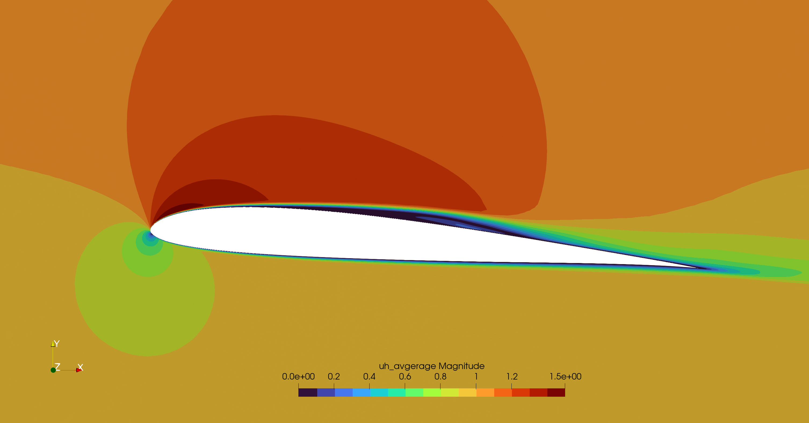

Airfoil

It is one of the most complex and interesting case. The user has to create a proper mesh in gmsh setting the following physical boundaries:
inletfor the inletoutletfor the outletairfoilfor the airfoil wallslimitsfor the top and bottom boundaries
The velocity at the inlet is increased from 0.0 arriving to the target value u_in at t_endramp. This increase the numeric stability. If t_endramp = t0 the velocity at the inlet will be immediately u_in. For numeric stability is better to keep u_in = [1.0,0.0,0.0], then fix the Reynolds and so the viscosity will be automatically computed as: ν = 1/Reynolds
The pressure is set 0.0 at the outlet section. The velocity on the limits is set equal to the one at inlet.
3D LES are heavy and it is possible to experience divergence issues. It is suggested to use one of the two initialization techniques: Velocity ramping or Boundary layer initialization. For visualize the results, please refer to the section.
NACA0012
A common validation test case is to analyze the NACA0012 airfoil and compare the pressure distribution with experimental results. This is a simple 2D simulation at high Reynolds number $3e6$. For run this case it is suggested to have hypre installed to use a more powerful preconditioner for the resolution. It has been tested on 16 CORES and requires approximately 35 hours.
Simulation File
using PartitionedArrays
using SegregatedVMSSolver
using SegregatedVMSSolver.ParametersDef
using SegregatedVMSSolver.SolverOptionsSet the physical parameters of the simulation
t0 =0.0
dt = 0.00025
tF = 15.0
Re = 3_000_000
D = 2
rank_partition = (16,1,1)
mesh_file = joinpath(@__DIR__, "NACA 0012_2D_A10.msh")Setting the parameters of the simulation
sprob = StabilizedProblem(VMS(1))
timep = TimeParameters(t0=t0,dt=dt,tF=tF,t_endramp=2.0)
physicalp = PhysicalParameters(Re=Re)
solverp = SolverParameters(M=25,Number_Skip_Expansion=1e6, petsc_options = petsc_options_cstm(), matrix_freq_update=1)
exportp = ExportParameters(printinitial=true,printmodel=true,name_tags=["airfoil"], fieldexport=[["ph","friction"]])
meshp= MeshParameters(rank_partition,D,mesh_file)
simparams = SimulationParameters(timep,physicalp,solverp,exportp)
AirfoilCase = Airfoil(meshp,simparams,sprob)
Solve in Sequential - on 1 processor not using MPI, useful for debug.
SegregatedVMSSolver.solve(AirfoilCase,with_debug)Solve in MPI - for HPC computing
SegregatedVMSSolver.solve(AirfoilCase,with_mpi)Then in bash give the command. Check the MPI section for more details
mpiexecjl -n 4 julia --project=. run_mysimulation.jlResults
The results can be post-processed using the following script. The first 10000 time-steps are skipped to avoid the initial transient.
using Pkg
Pkg.activate("../.")
using SegregatedVMSSolver
using SegregatedVMSSolver.ReadAirfoilResults
using Plots, LaTeXStrings, KissSmoothing
using CSV, DataFrames
using JLD2
Case = "NACA0012"
α = 10.0
res_path = joinpath(@__DIR__, "$(Case)_A$(Int64(α))", "Results/")
Re = 3_000_000
der_slope= -1.0
u0 = 1.0
c = 1.0
rho = 1.0
μ = u0*c*rho/Re
nodes, normals = get_geometry_info(res_path;α=α, der_slope= der_slope)
Ph = time_space_average_field(res_path, "ph", nodes; offset=10_000)
cp_top, cp_bottom = extract_Cp(nodes, Ph; u0=u0, rho=rho)
plot(nodes.top.x ./ cosd(α), cp_top, label = "2D - VMS", color = :red, linewidth = 1.5)
plot!(nodes.bottom.x./ cosd(α), cp_bottom, label = false, color = :red, linewidth = 1.5)
yflip!()
plot!(xlabel="x/c", ylabel="Cp", legend=:top)The pressure distribution results are compared with the experiments reported in [4]